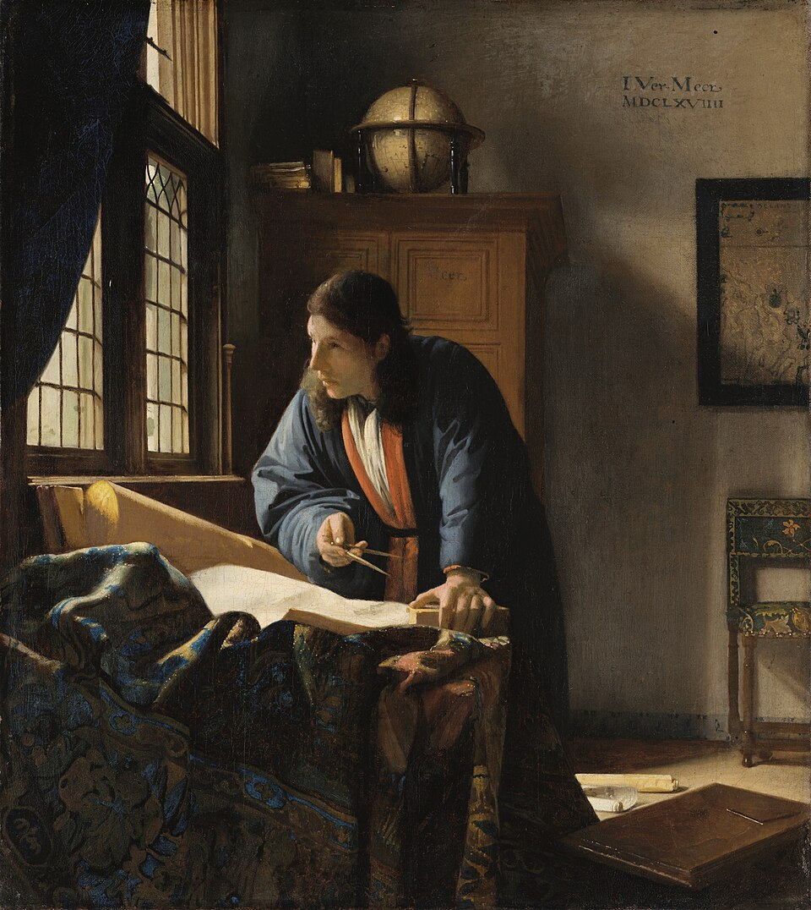
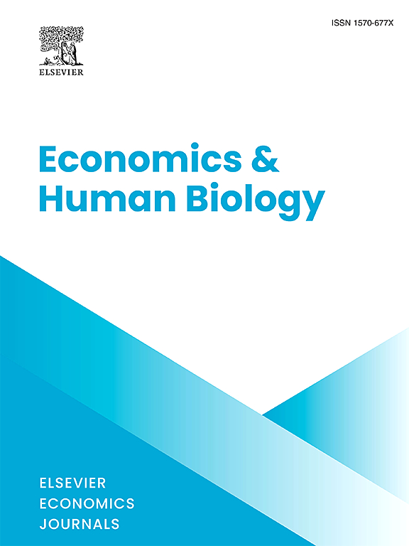
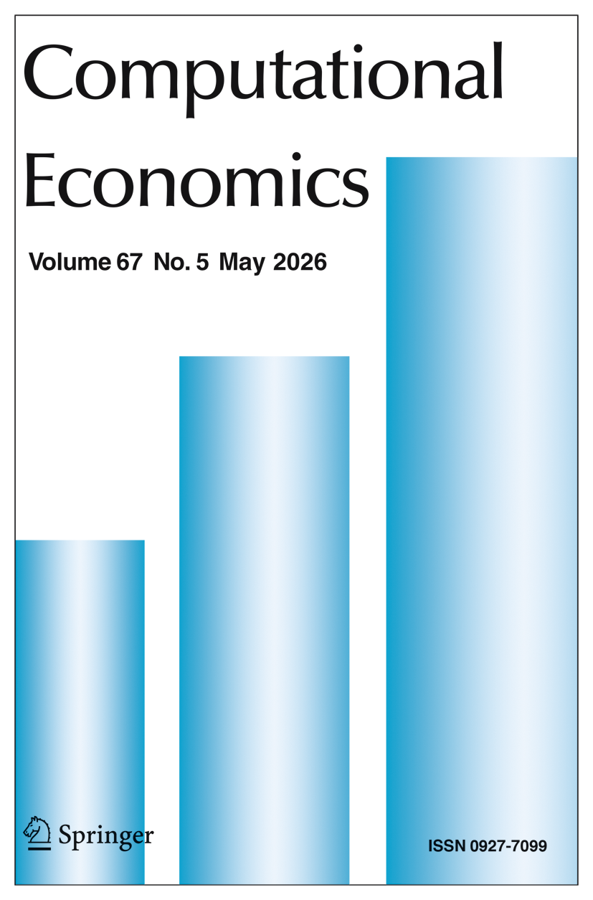
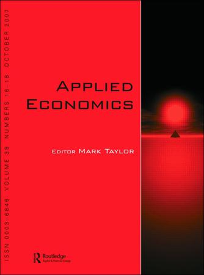
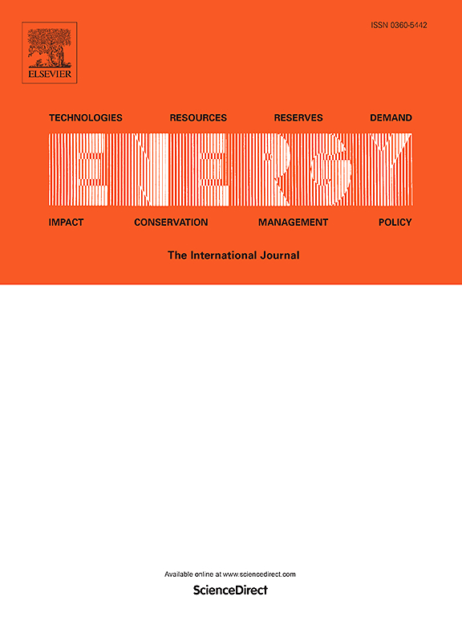
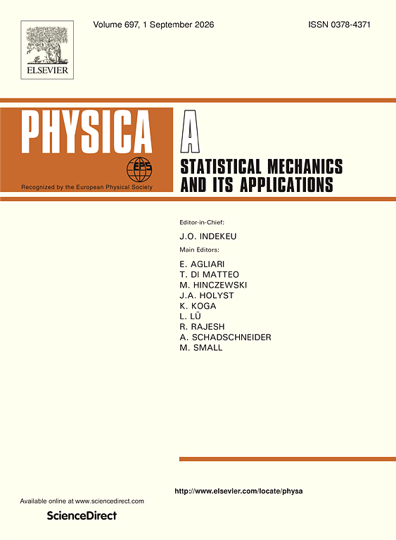
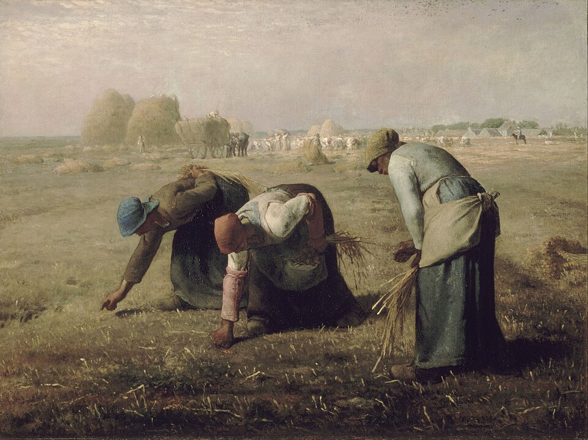
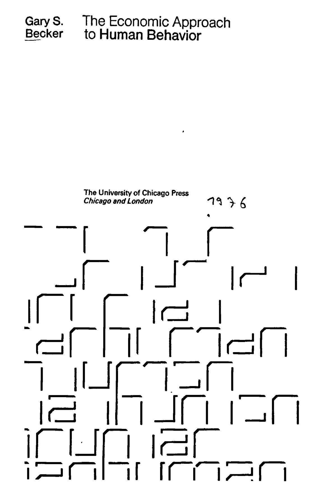
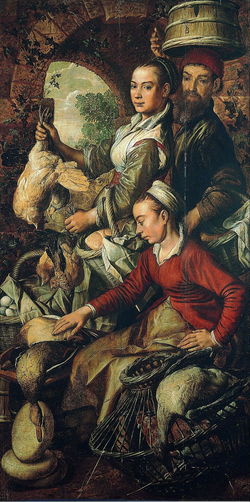

About
My work covers economic history, political science, development economics, and micro theory. I am always happy to receive feedback, criticism, or the chance to collaborate.
News

Aug 2026
Selected for the Anhui Province Young Scientist Cultivation Program
Honored to be selected for the Anhui Province Young Scientist Cultivation Program (安徽省青年科学家培育计划).
Award
Research
Working papers, work in progress, and published articles, grouped by field.
Economics
Working Papers
3
01Reject & Resubmit · Quarterly Journal of Political Science
A Formal Model of Emotional Accountability
Formerly titled “A Formal Model of Climate Pledges and Accountability”, it is being reworked as a new story, retitled “A Formal Model of Emotional Accountability”, and will be revised together with new collaborators.
To be presented at the 98th Annual Meeting of the Southern Political Science Association, January 2027
We develop a dynamic model of climate pledges in which voter accountability and the commitments themselves are endogenous. Green and Brown governments alternate in power and announce pledges that their successors inherit. Voters feel anger when implemented effort falls short of an endogenously evolving reference point, and incumbents can strategically prime that anger. We show that moderate accountability leads Green incumbents to overpledge, forcing Brown successors to exert higher effort. Strong accountability, however, backfires: the emotional ratchet induces incumbents to abandon strategic pledging, producing a discontinuous drop in expected effort. We characterize this compliance cliff and relate pledge dynamics to observed reversals, offering a general account of decentralized cooperation.
02Revise & Resubmit · Cliometrica
How to Achieve Technological Leapfrogging: Evidence from China's Self-Strengthening Movement
Reading China's Self-Strengthening Movement as a playbook for how late developers compress the catch-up gap.
Presented at the 11th Quantitative History Annual Conference, Yantai, China
While extensive research diagnoses causes of technological backwardness, little examines how nations effectively bridge such gaps. How can late-industrializing economies accelerate technological catch-up? This study reinterprets China's Self-Strengthening Movement (SSM) to reveal how state-directed institutional adaptation compressed development timelines. Historical evidence shows that SSM-era military investments catalyzed catch-up through two mechanisms: strategic human capital accumulation and pervasive cognitive shifts dismantling technological conservatism. These institutional interventions created foundational capacity, enabling China's subsequent rapid electrification despite late entry. The findings illuminate the critical role of deliberate state plasticity in overcoming initial disadvantages. As China now faces its "Deepseek moment" — confronting new technological frontiers — this analysis offers a blueprint for developing economies seeking to engineer accelerated technological convergence. State-facilitated institutional adaptation emerges as a vital driver for latecomer advancement.
03Under Review
Political Purges and Elite Networks in Late Han China
How does uneven information shape a ruler's purges? We study late Han China. The court tracked social ties more closely than local military organization. In our model, current military command is observable, while latent mobilization is less legible. The model predicts that purges kill the well connected, spare the armed, and underweight latent capacity to raise troops. We test this with detailed network data, coded military command, and survival outcomes for 197 elites. A rise of one standard deviation in clustering is associated with an increase of about nineteen percentage points in the probability of political death. Brokerage predicts recruitment, not death. Elites without political-purge deaths were less connected and more likely to hold military command. Their ranks included the later warlords.
Work in Progress
15
Biodiversity and Innovation
A formal model of how biodiversity feeds innovation across gene science, biomimetics, chemistry and drug discovery, calibrated on pharmaceutical data.
Bullying and Personality Formation
Selected for the Asian and Australasian Society of Labour Economics Conference 2026 (AASLE)
The Emperor's Lottery
We study how states allocate talent when rulers must reward merit yet forgo case-by-case control. Qing China filled most county posts by lottery but reserved discretion for the hardest ones. Using newly digitized rosters for 1850–1864 and 1900–1912, we show strong and precise background-based sorting of officials across posts under the lottery channel, and no detectable sorting under discretionary provincial assignment. A commitment model explains how grouping candidates before the draw preserves matching gains under randomization. Freezing provincial destinations still keeps 45.2 and 41.2 percent of the nationwide assignment-score gain, yet realizing it within provinces demands reassigning at least 17.6 and 10.8 percent of appointments.
The Environmental Cost of Cryptocurrency
We revisit the widely cited environmental cost of cryptocurrency and ask whether the true footprint of Bitcoin is as large as the headlines claim.
Hiding the Heir: Succession Secrecy and Dynastic Conflict in Europe
When a ruler's chosen heir becomes public knowledge shapes the violence of the transition that follows. Historians of monarchy have long noted a dilemma, since a designated heir becomes a rival center of power while an open succession invites plotting. We build a dynamic game in which a ruler installs an heir publicly or seals the choice and reveals it at death, and we derive an approximately optimal protocol of secrecy, a limited pledge window, and a named first coordinator. We show that secrecy deters challenges to a living target yet transfers the burden of coordination onto the accession, so a hidden heir inherits a document rather than a coalition. In a new hand-coded register of European successions from 1000 to 1800, public designation predicts more challenges before the ruler's death but shorter interregnums afterward. We test how this trade-off turns on the number of eligible princes, assess the binding role of protocol credibility, and discuss what the optimal design implies for transitions of power.
Optimal Tenure
Peer Effects of Early Maturation in Classrooms
Rethinking the Malthusian Trap
Reconsidering Malthus and the classical population check through a gene-environment lens.
Self-Fulfilling Superstition: Zodiac Compatibility and Marriage in Qing China
Superstition is usually modeled as a distortion. We show that it can instead select the equilibrium of a coordination game that spouses play after marriage, and that its value reverses with the thickness of the marriage market. Our setting is the Eight Banners population of Liaoning, recorded in registers that span 1749 to 1909. Because the zodiac compatibility class of a couple is fixed by two predetermined birth years, it is exogenous to marriage-market conditions. Compatibility predicts whom people marry and how long marriages last. A structural search and matching model separates the belief from assortative matching on lineage and wealth and implies that the belief raises surplus in thin markets and lowers it in thick markets.
Social Networks and Political Purges: Evidence from 1927 China
We ask how a regime that cannot observe political loyalty decides whom to purge. Using the 1927 Kuomintang purge of Chinese Communists, we build a person-level network of Whampoa Military Academy cadets from their native place, class cohort, and contact address, and match it to purge outcomes recovered from martyr registries and digitized Republican newspapers. A search-and-screening model predicts that victimization follows network exposure rather than true type. Leave-one-out peer instruments, exogenous variation in telegraph access, and the differing timing of the Nanjing and Wuhan purges identify a network contagion process behind guilt by association.
The Value of Textbooks
A short reflection on what textbooks are really worth.
War, Death and Preferences
The Wind Price of Industrial Land
Air pollution is emitted where plants sit but inhaled where the wind carries it. We study optimal industrial siting when the regulator cannot observe firm types and can price land, not tonnes. The second best charges each site its discounted plume: a siting-rights auction with these reserve prices implements the optimum without screening firms. Calibrated to China's 2+26 cities, plume prices differ severalfold within a city and reorder the optimal industrial map; monitor-based standards instead push plants into regulatory shadows, where exposure per tonne is highest. Repricing siting buys more than a decade of tighter standards.
Zodiac Superstition, Fertility, and Human Capital: Evidence from Qing China
Cultural beliefs about fate can stall or spur accumulation, yet their growth consequences are rarely identified. Using administrative registers from Qing Liaoning (1749–1909) and the twelve-year zodiac cycle, assigned mechanically by birth, we compare the same individual across spells that do or do not contain a zodiac year. Fertility rises during zodiac years, especially in sons, while mortality and flight do not; marriage accelerates among the young. The response reverses with lineage position: individuals with living parents and no sons increase births, others reduce them. Superstition thus operates as a merit market, channeling beliefs into fertility, human capital, and growth.
算法承诺、信息挤出与治理分权
当人工智能接管治理任务，哪些地方情境知识值得保留，又该经哪条渠道上报。
当前，数字政府建设加速推进，人工智能不断承担原本依赖地方判断的治理任务，如何在提升政务效率的同时维护地方长期积累的情境知识，正成为亟待解决的关键问题。本文聚焦数字政府治理中算法与地方知识的配置，通过构建中央与地方两级政府的信息配置模型，把地方知识刻画为可在多项任务间共用的投入，揭示任务归属经由共用投入影响人机比较优势的微观机理。研究发现，算法承担一项任务，既替换该任务的信息来源，也缩小其余任务调用地方知识的范围，因此过于零散的授权组合均劣于全算法配置，有价值的地方任务必须成组保留，地方组合的最高平均净信息价值决定全面部署算法的制度门槛；逐项部署即便逐轮更新都使人机表现与福利不降，仍可能停留在次优清单。本文进一步表明，地方判断既可以就地执行，也可以经报告进入集中执行，当报告成本较低而容量有限时，两种渠道能够共同维持单一渠道无法维持的知识生产；当报告可靠性有限时，信息价值较高的任务更值得保留地方执行，扩充报告容量会提高福利却降低知识投入。本文把数字政府中的人机分工从给定任务上的静态比较优势，拓展为知识用途与执行渠道的联合配置，为分类分级的算法治理提供理论依据。
Micro Theory
Working Papers
3
03Under Review
Carrier Status, Cousin Offers, and Observability in Marriage-Market Search
How does a positive carrier-screening result change the choice between a confirmed first-cousin offer and unrelated marriage-market search? We depict this choice as a model in which a healthy adult who knows her genotype can surrender a kin offer for a costly search attempt. We derive conditions under which private carrier status raises the reservation cost of leaving the kin option, candidate observability reverses that ordering, and early and late disclosure differ. When candidates infer type from the absence of a signal, disclosure combines rejection with improved beliefs, so its effect on carrier search is ambiguous. We show that the ordering and the monotone disclosure response survive repeated search without recall.
01Under Review
Optimal Block Time with Staking Commitment
How do protocol rules create commitment in a market where tokens pay no cash flows? We study a Stackelberg game where a staker locks tokens for integer blocks and commits to a deterministic liquidation schedule and a trader reacts to diffusion and jump news under block-dependent execution costs. The trader's unique affine best response makes the staker's schedule the metric projection of a fuel-only benchmark onto a cumulative-sales obstacle, yielding constraint losses and a test of whether the lock-up binds. At a fixed reward rate, every payoff-maximizing block time is strictly interior above a computable threshold. Higher rewards weakly lengthen commitment, while greater belief volatility weakly shortens the optimal block time. Protocol speed and credible commitment are one design problem.
02Under Review
Order Flow as a Resource: MEV, Mining, and the Market for Transaction Sequencing
Does the right to sequence transactions strengthen or undermine blockchain security? We model miners' ordering choices in a Proof-of-Work blockchain. Block value must be weighed against reorganization risk. The equilibrium displays strategic complementarity. Higher aggregate MEV attracts hash power, lowers reorg risk, and reinforces extraction incentives. This yields multiple equilibria: miners either extract no MEV or extract fully. Within a block, bot MEV crowds out retail transactions. In the long run, miner entry is neutral for the within-block allocation. Retail fees do not depend on aggregate hash power. Higher bot MEV therefore raises retail fees at all horizons. The sequencing rights market creates a trade-off between funding security and protecting users.
Work in Progress
10
Credible Evaluation Design
Formerly titled “Optimal Evaluation Design for Robust Learning Agents under Distribution Shift”
An evaluator who must keep every test credible faces a trade-off between the strongest authorized screen and the temptation of AI agents to game the benchmark rather than serve deployment.
We study information design in which an authority sets evaluation frequencies to steer AI agents away from benchmark gaming, the pursuit of high leaderboard scores in testing at the expense of performance in deployment. Credibility bounds each authorized protocol, so the design trades two burdens: the strongest protocol permitted and the average departure from deployment. We characterize this frontier and show that the burden minimizers generally differ. For screens that preserve labeled-task composition, we derive sharp bounds linking the two burdens. Under average log-frequency accounting, amplifying rare failures rewards concentrating pressure in occasional strong tests, whereas suppressing rare easy contexts makes mild screening optimal. We give convex certificates for both burdens and conditions under which new protocols lower the burden of an existing standard.
Data Progress and the Confidence Trap
Firms route forecasting, diagnosis, and credit screening to AI models whose reported confidence sets how much human effort to retain. We cast it as a delegation problem where data coverage drives accuracy and overconfidence. Further data can raise accuracy and weaken overconfidence on every task yet lower the payoff from following their reports, because improved answers pull tasks across two protection boundaries too soon. We give an exact loss for premature crossings, show how task density reverses the return to coverage progress, and derive the calibration speed progress requires. A beneficial upgrade can pass through harmful intermediate versions. Under pooled evidence, selective approval prices a payoff guarantee, small concessions cutting worst-case regret at a square-root rate until both losses balance.
The Design of Scientific Gatekeeping
Generative AI lets authors produce publication-ready manuscripts almost for free, and no editor can referee the resulting flood. We build a theory of scientific gatekeeping in which a model is dual-use: it raises the genuine output of able researchers and cheapens the packaging that makes weak work look strong, and the gatekeeper cannot separate the two. Authors differ in research ability and AI fluency, while model capability grows across generations. This creates a discernibility externality that no author internalizes. Three counterintuitive results follow. Raising the acceptance bar can lower the genuine quality of the published record, a more capable model can reduce welfare even as it raises output, and mandatory disclosure of AI use can backfire. Optimal policy therefore concentrates on the output side, combining submission fees, verification, and ex post liability rather than detection.
Designing Correlated Evidence in Teams
An AI team reads shared sources, and each source sharpens every judgment while carrying one common error into all of them, so limiting circulation diversifies team error rather than losing efficiency.
Large language model agents share reusable evidence: the same retrieved context feeds several calls that each return a judgment for a decision. Useful content sharpens every judgment, yet a common omission travels to every user, so sharing links errors at their source. We ask how a principal should procure these sources, assign their audiences, and weight the decisions. For homogeneous sources under equal weights we construct the optimal architecture and reveal a homogenization trap: buying every source is optimal, yet giving every source to every agent is strictly suboptimal even under optimal aggregation. This reversal implies that limiting circulation diversifies team error rather than wastes evidence. We further show that stronger fallback decisions restore supplier financing without improving full-team accuracy.
Limit theorems for non-clairvoyant dynamic pricing in random environments
We study repeated selling of a perishable good whose value distribution is governed by an unknown stationary random environment. A non-clairvoyant seller sets prices from past observations, while a clairvoyant oracle knows the environment law. We prove that non-clairvoyant regret vanishes and revenue reaches the oracle level almost surely. We establish a central limit theorem for regret and identify its limiting variance through a Green-Kubo formula built from the optimal revenue influence function and the environment Dirichlet form. A large deviation principle shows that the classical worst case guarantee of one half is exponentially rare. A mean field limit produces a Gibbs stationary measure for pooled pricing. Non-clairvoyance is asymptotically costless except under exponentially unlikely adverse environments.
Non-Clairvoyant Bayesian Persuasion
We study Bayesian persuasion by a sender who commits to a disclosure rule before knowing the audience's prior. Under convex ambiguity and monotone surplus ordering, the optimal rule is coarse: one upper state tail every admissible audience accepts.
Optimal Screening of Private Losses on Contagion Networks
Relief that halts a loss spreading along a network also erases the only evidence a principal has about private losses, so the optimal design keeps some contagion alive to verify claims.
We study the optimal design of relief for privately observed losses that spill over along a network. Relief protects claimants, yet the contagion it suppresses is also the principal's only evidence about private losses, so protection and verification compete. We introduce the relief multiplier, which aggregates contagion-weighted social values, and the corresponding verification capacity of each node. The optimal mechanism exploits contagion as a monitoring technology and attains the first-best whenever losses are sufficiently affiliated. Hubs may receive less relief than peripheral nodes, and stronger contagion can raise welfare. The optimum solves a fixed point whose distributed, monotone iteration converges to the unique constrained-efficient allocation. We derive closed forms and testable comparative statics.
Optimal Sequential Interdiction of a Loitering Munition Swarm
A defender must protect assets against a swarm of loitering munitions whose payloads are hidden, so each object is either a warhead or a decoy, while interceptors are scarce and one spent on a decoy is wasted. We model the conflict as a sequential screening game in which the defender observes noisy signals of each object's type and decides when to engage, and the attacker jointly chooses the decoy fraction and the strike time. We show that the defender's optimal interdiction policy is an index rule on the posterior threat probability, and we characterize the equilibrium through a tractable convex program. We further identify a saturation threshold beyond which defense collapses, show that the attacker's optimal decoy fraction is interior whenever deception is cheap, and derive comparative statics in the costs of decoys and interceptors. Numerical experiments calibrated to loitering munition data confirm the index policy and the saturation effect.
Screening and Matching in Supply Chains
We study supply chains in which buyers match with suppliers whose match productivity is persistent and privately observed. We show that the second best allocation is a Monge–Kantorovich plan whose transport cost equals the information rent, and we characterize the dual potentials as prices of incumbency. This yields a two regime characterization. With low persistence, matching is assortative and rents are small. With high persistence, rents compound, the sorting premium vanishes, and matching reverses. A key welfare finding is that a uniform tariff can raise output while diversification mandates reduce it. The analysis shows how persistence alone reshapes sorting.
Too Connected: The Value of Habitat Connectivity
Species must find habitat that suits them, and connectivity sets how fast they find it. Connectivity is nonetheless credited with raising occupancy everywhere, ignoring the crowding that follows when many species reach the same patches. We model habitat as a market with search frictions and solve for equilibrium biodiversity. Biodiversity is not monotone in connectivity: past a threshold, more corridors let mobile generalists displace residents. A randomized corridor experiment and a twenty-year breeding bird panel confirm that threshold. Calibrated to United States land cover, connectivity raises diversity by 10 percent, worth about US$30 billion a year.
Science
Working Papers
3
01Working Paper
Do Gender Peer Effects Overlook Heterogeneity?
Presented at the 2nd China Education Economics Seminar, Beijing
02Working Paper
Global cooling and local warming pace warfare across ten centuries
Warfare has punctuated every century of the past millennium, yet its climatic drivers remain disputed. Existing studies regress conflict on local weather one scale at a time and cannot separate a global temperature shock from regional deviations. Here we assemble ten centuries of palaeoclimate reconstructions and georeferenced battles across Eurasia and the Americas, and resolve their coupling across time scales. Global temperature co-varies with warfare at centennial scales, whereas local temperature deviations drive it at decadal scales. Phase analysis places volcanic and solar forcing ahead of both. Temperature, not politics alone, paces the rhythm of history.
03Working Paper
Unequal gains from paying for forests
Payments for forest conservation are a pillar of global climate policy, yet whether they deliver their benefits fairly, and to whom, remains unknown. Reanalyzing a landmark randomized trial in Uganda, we show that a uniform payment to forest owners conceals large inequality in its effects. Using causal forests, we find that although every owner benefits, the gains are extremely skewed and that the top six percent of owners achieve conservation gains more than triple the average. This variation reflects baseline characteristics rather than the program itself. The strongest predictor is not poverty, education, or timber income but baseline forest cover, which shapes effects in an inverted U pattern: owners with moderate endowments facing active deforestation pressure gain the most. Data driven targeting rules can raise the benefit cost ratio by a factor of two to three, but the most profitable rules channel payments to the wealthiest owners, deepening the very inequality that motivated the program. Simple, transparent decision rules deliver comparable efficiency while spreading payments across the socioeconomic distribution. The efficiency equity trade off in climate finance is therefore not inevitable: how we target matters as much as whether we target.
Undergraduate Publications

Cold Winter, Desperate Heart: Experience of the Great Famine and Drinks
Economics & Human Biology
2026
High-Speed Rail Opening and Regional Green Finance Development: A Causal Forest Analysis of Driving Mechanisms and Heterogeneous Effects
Transport Policy

The Risk Transmission Mechanism of Global Stock Markets from the Perspective of Entropy-Riemann Geometry: Theoretical Construction and Empirical Analysis
Computational Economics
2025
How Climate Shocks Affect Stock Market Risk Spillovers: Evidence from Causal Forest Algorithm
Computational Economics

Will Informal Environmental Regulation Become a New Incentive to Reduce Corporate ESG Greenwashing? Empirical Evidence from Public Environmental Concerns
Applied Economics

Nonlinear Heterogeneity Impact of El Nino-Southern Oscillation on Energy Markets: A Global Perspective Analysis
Energy

Multi-Scale Dynamic Correlation and Information Spillover Effects between Climate Risks and Digital Cryptocurrencies: Based on Wavelet Analysis and Time-Frequency Domain QVAR
Physica A: Statistical Mechanics and its Applications
2024
Multi-Scale Dynamic Correlation between Climate Shock and China's Stock Market: Evidence Based on High Frequency Data
Computational Economics
Google Scholar Profile
The complete list of my publications is available on Google Scholar.
Media
WeChat Essay
Game On: Social Networks, Bubbles, and Momentum — a JFE 2022 Model Walkthrough
A model-focused walkthrough of Lasse Pedersen's "Game on: Social networks and markets" (Journal of Financial Economics, 2022): how beliefs spread through social networks generate momentum, reversal, and the anatomy of bubbles — from GameStop to influencers.
Read the essay →WeChat Essay
Anger as a Weapon or a Shackle? Protest and Policy in Martinelli & Xiao (2026)
Explains Martinelli & Xiao's "Why Do People Protest?" (Economic Theory, 2026) — an emotional game-theory account of when protests force concessions, invite repression, or never happen at all.
Read the essay →WeChat Essay
Order Without a State: Feudal Political Economy in Economic Theory
A readable walkthrough of Desierto & Koyama's "Feudal political economy" (Economic Theory, 2025): why medieval order rested on sharing power with the weakest nobles rather than centralizing violence.
Read the essay →WeChat Essay
When Faith Meets Drought: The Economics of Praying for Rain (QJE 2026)
Covers Espín-Sánchez, Gil-Guirado & Ryan's "Praying for Rain" (Quarterly Journal of Economics, 2026) — a belief-persuasion model of cultural evolution explaining why rain rituals persist even though they do not work.
Read the essay →WeChat Essay
Why Didn't Kings Demolish the Castles? A Game-Theoretic Reading (EER 2026, Part 1)
Part 1 of a game-theoretic breakdown of Desierto & Koyama's "Castles" (European Economic Review, 2026): private castles as credible exit options that solve the king's commitment problem and stabilize his coalition.
Read the essay →WeChat Essay
Vote or Fight? Political Economy in The Economic Journal
Explains Levine, Martinelli & Stoelinga's "Vote or Fight?" (The Economic Journal, 2026): democracy and conflict as substitute ways of allocating power, with distance from the global production frontier as the key determinant.
Read the essay →WeChat Essay
Indulgences and the English Reformation: Rents, Dissolution, and Reform
A political-economy account of Desierto, Koyama & Shera's "Rents and reformation": how Henry VIII's dissolution of the monasteries created vested interests that made England's Protestant turn irreversible.
Read the essay →WeChat Essay
Nobel Laureate Acemoglu on AI: Catalyst or Corrosive for Knowledge?
The first in a series on Acemoglu, Kong & Ozdaglar's "AI, Human Cognition and Knowledge Collapse" (NBER Working Paper, 2026) — a dynamic model of how personalized AI advice can erode human learning and collective knowledge.
Read the essay →Douyin Video · Aug 2026
Gene Prediction in Econometrica: Flagging an AI-Generated Error
A five-minute video on a forthcoming Econometrica paper about gene-based prediction, noting where the AI-generated summary got it wrong. Original title: "ECMA：基因预测 这里AI生成错了，这个文章forthcoming了".
Watch on Douyin →Douyin Video · Aug 2026
Fertility Policy: A New Stanford–NBER Study
A five-minute video summarizing a new study on fertility policy from NBER-affiliated Stanford research. Original title: "NBER斯坦福新研究：生育政策".
Watch on Douyin →Douyin Video · Aug 2026
The Salt War: An Economic History Paper from a Top Journal
A five-minute video sharing a top-journal economic history paper on the "Salt War". Original title: "经济学顶刊论文分享：经济史salt war".
Watch on Douyin →MO.Shu's Blog (Read & Reflect) — Douyin Channel
Weekly paper-explainer videos generated by an automated DeepSeek workflow. Current channel: 3 videos on econometrics and genetics, fertility policy, and economic history. Chinese name: MO.Shu的博客（边读边想）.
Resources

Des Glaneuses (The Gleaners)
Jean-François Millet, 1857. Musée d'Orsay, Paris.
Three women bend low over a harvested field, gathering what the reapers have left behind. Gleaning is one of the oldest institutions of the commons, a fragile social contract between property and need.
Experimental Economics — Reading Lists
Der Bücherwurm (The Bookworm)
Carl Spitzweg, c. 1850. Museum Georg Schäfer, Schweinfurt.
An elderly scholar stands atop a library ladder, so absorbed in his book that he seems unaware of the magnificent baroque hall around him. I share this affliction, though with far less erudition.
I am still a student of experimental economics, and these reading lists are my attempt to make sense of a literature far larger than myself.

The Art of Experimental Economics: Twenty Top Papers Reviewed
Chosen through citations, expert recommendations, and voting by members of leading societies, the twenty papers in this volume span the full gamut of experimental economics.
Part 1Foundations & Market Experiments
Introductory framework, Vernon L. Smith's competitive market behavior, and Reinhard Selten's strategy method.
Part 2Bargaining, Auctions & Information
Ultimatum bargaining, winner's curse, group size in public goods, and rational expectations.
Part 3Behavioral Anomalies & Fairness
Endowment effect, cross-cultural bargaining, and level-k reasoning.
Part 4Trust, Cooperation & Social Preferences
Trust and reciprocity, cooperation and punishment, and preferences for altruism.

Het Melkmeisje (The Milkmaid)
Johannes Vermeer, c. 1657-1658. Rijksmuseum, Amsterdam.
Vermeer's milkmaid pours milk with a concentration that transforms a humble kitchen task into something monumental. Becker taught us to see the same dignity in all human behavior.

The Economic Approach to Human Behavior
Becker's revolutionary insight was that the economic approach applies not just to markets but to all of human behavior: marriage, crime, addiction, discrimination, and the allocation of time.

Market Scene
Joachim Beuckelaer, c. 1560s. Museum of Fine Arts, Ghent.
Beuckelaer painted market scenes overflowing with abundance — each stall a miniature economy of supply, demand, and price. Price theory begins where the market begins.
Price Theory and Applications
The standard textbook on price theory — the core of microeconomics. The logic of optimization and equilibrium illuminates everything from consumer choice to market failure.
Contact
Always happy to talk
Whether you have feedback on my work, want to collaborate, or just want to chat about coffee, Go, or LeBron James, I would love to hear from you.
Send Email →